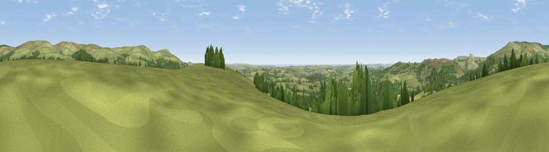

Viewpoint near Cornwood
#5536 in England · top 12% of its area beats it · near CornwoodWhere it is
The exact computed spot (SX 61825 58825). Click the marker for map links.
The view, rendered

A 360° render of this exact spot computed from the terrain model, tree cover and land cover — summer colours, afternoon light, calibrated against photographs of famous viewpoints. Real trees, hedges and buildings will differ in detail.
The panorama
Grey silhouette: terrain skyline in each direction (720 bearings, Earth curvature and refraction included). Dashed green: skyline with trees (+15 m) and buildings (+8 m) as obstacles. Blue strip: how far the ground is visible on each bearing.
Where the view opens
Wedge length = distance to the farthest visible ground on that bearing (vegetation-aware). Rings at 10, 25 and 50 km.
What fills the view
65% grassland · 26% woodland · 6% cropland · 2% built-up · 1% water
Angular shares of the visible panorama (visual magnitude), not map area. Landscape diversity 0.40 (0–1 Shannon).
Key numbers
More beautiful places nearby
The staircase of upgrades: each row has a higher view potential than everything closer. Driving times are estimates from straight-line distance, calibrated against real road routing — check an actual route before setting out.
| Place | Direction | Drive | Score |
|---|---|---|---|
| Viewpoint near Ivybridge | SSE · 2 km | ~5 min | 73.0 |
| Viewpoint near Cornwood | NNW · 3 km | ~8 min | 75.0 |
| Viewpoint near Sparkwell | WNW · 4 km | ~8 min | 77.4 |
| Western Beacon | ESE · 4 km | ~9 min | 81.9 |
| Viewpoint near Lee Moor | WNW · 7 km | ~15 min | 82.7 |
| Viewpoint near Hope | SSE · 21 km | ~35 min | 84.4 |
| Viewpoint near East Prawle | SE · 27 km | ~43 min | 84.6 |
| Pencarrow Head | WSW · 47 km | ~68 min | 86.0 |
50.41300, -3.94609 · source: screening · position refined by local search. Computed location — check access rights before visiting.